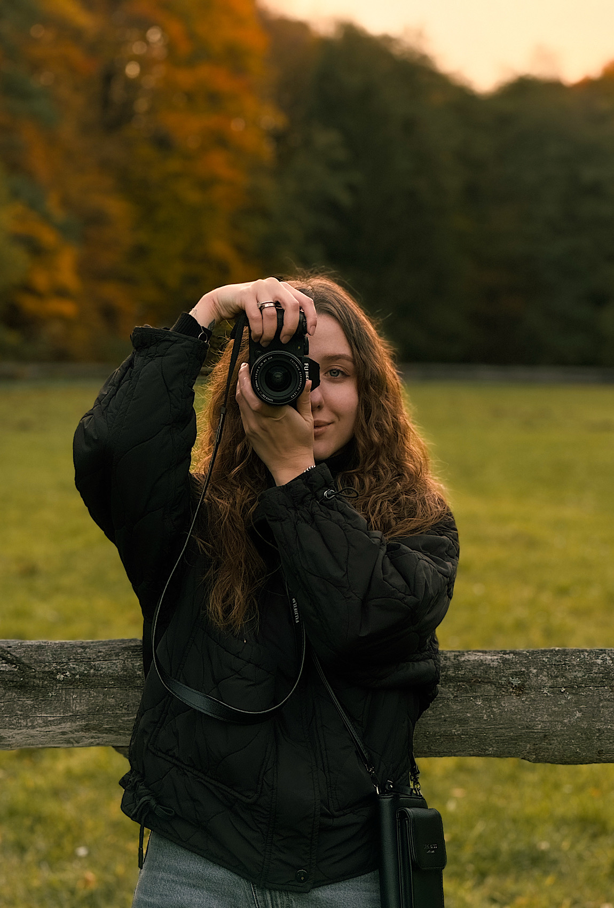

BRATISLAVA · VIENNA
Привіт! Я Даша 🤍
Я фотографую в Братиславі та Відні й дуже люблю те, що роблю.
Для мене фотографія — це не просто гарна картинка. Це можливість зберегти моменти, емоції та почуття, до яких хочеться повертатися навіть через багато років.
У своїх знімках я люблю природність, м’яке світло, красиві деталі та щирі емоції. Мені подобається створювати кадри з особливою атмосферою — трохи кінематографічні, живі й справжні.
Я знаю, що не кожному легко почуватися вільно перед камерою. Тому на зйомках для мене важливо, щоб ви не хвилювалися, не намагалися бути кимось іншим і просто залишалися собою. Я завжди допоможу з позуванням, підкажу, як краще стати, і подбаю про те, щоб наша зустріч пройшла легко та невимушено.
Мені хочеться, щоб після зйомки у вас залишилися не лише красиві фотографії, а й приємні спогади про сам процес.
Якщо вам близька моя естетика, буду дуже рада познайомитися з вами та створити щось особливе разом.
Можливо, саме час зберегти вашу історію 🤍